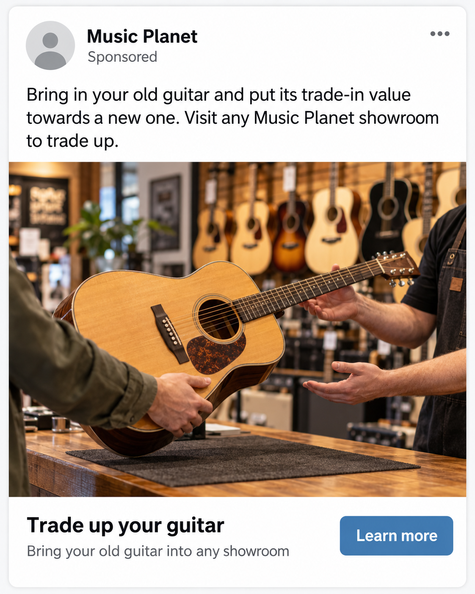

Week 10 tutorial: Vibe coding for digital marketers
Building working marketing tools for Music Planet, no coding required
Today we move from using AI to write things to using AI to build things: a budget planner for your A3 campaign and a live landing page you can share.
Arrow keys to navigate. S for speaker notes, R for references, N for slide list.
This is the final tutorial of the semester. Open by drawing the contrast with how students have used AI so far in the course. Across A2 and A3 they have mostly used AI to generate text: summaries, analysis, copy and prompts. Today they use the same skills to build functional things.
Both activities are anchored in work students are already doing. Activity 1 produces a budget and KPI planner built around the A3 constraints. Activity 2 produces a landing page for their own A3 campaign concept. Frame today as a new mode of working rather than a new tool: the quality of the brief still decides the quality of the output.
MKTG 304 · Week 10
Where this week fits
From content generation to artefact generation
Earlier
Content and analysis
Using AI to research, draft and summarise
→
This week
Vibe coding
Using AI to build working marketing tools
→
Next
A3 and A4
Submitting your proposal, then defending it out loud
The output today is not a paragraph. It is a tool you can use, test and share.
Position the session in the arc of the course. Students have used AI for content and analysis tasks since Week 2, when they built their Client Intelligence Brief. This session introduces a different use: building functional digital artefacts.
The core skill is unchanged. The Client Intelligence Brief they built in Week 2 becomes the Context for both builds today, and the CRAFT framework structures both prompts. The final stage on the slide points to A3 submission and the A4 defence, which is why the session ends with IOA practice.
Week 10
Learning outcomes
Distinguish between content generation and artefact generation as two modes of working with AI.
Write a Format instruction precise enough to work as the spec for a tool or page.
Build a budget and KPI planner for your A3 campaign, and separate verified figures from assumptions.
Use Lovable to build a landing page that matches the ad sending visitors to it.
Test an AI-built artefact for accuracy, usability and privacy before you share it.
Stretch: Build a Claude Project from your Music Planet sources and use it to check your A3 work for consistency.
Free accounts are enough for today: Claude or ChatGPT for Activity 1, and Lovable at lovable.dev for Activity 2. Have your Client Intelligence Brief from Week 2 open.
The outcomes now follow the shape of the session. Outcome 2 is the thread running through both builds: when the output is a tool rather than text, the Format instruction is the design, and anything left out gets filled with defaults. Slides 9, 12 and 13 all come back to it.
Outcome 3 adds verification to the build. An AI-built planner will happily fill itself with benchmark figures that look precise but have no source, so students must know which numbers they have checked and which are assumptions.
Outcome 4 is about message match. The landing page is the destination for an ad, so it has to pick up where the ad left off. Slide 17 uses an example ad to make this concrete.
Outcome 5 brings back the Week 2 Diligence and security material and applies it to something students have built themselves.
Outcome 6 is optional. Students who finish early start building a Claude Project from their Music Planet sources (Client Intelligence Brief, tone of voice, brand guidelines, buyer personas, campaign concept and A3 brief) and finish it before the A3 deadline.
Pause after the callout and give students 60 seconds to confirm they have both accounts open. Students who hit a login wall mid-activity lose momentum and disrupt the group.
Concept
What is vibe coding?
Using natural language to build functional digital artefacts rather than written content.
Brief section introduction. The term was popularised in early 2025 to describe building software by describing what you want in plain language and letting an AI model write the code. Keep this short and move to the explanation slide.
Concept
Two different things AI can do for you
Content generation
You prompt AI to write something. The output is text: a caption, a persona, an email, a summary. You read it, edit it and use it somewhere else.
Artefact generation (vibe coding)
You prompt AI to build something. The output works: a calculator, a landing page, a quiz. You use it directly, share it or iterate on it.
The skill is the same in both. A precise brief produces a usable output. A vague brief produces something generic you have to rebuild.
Emphasise that vibe coding is accessible to non-technical students and that the outputs can go into a portfolio. Useful marketing examples beyond today's activities include product finder quizzes, ad copy previewers that check character limits, UTM link builders and simple reporting dashboards built from exported data.
The callout repeats the Week 2 point about the description gap: generic outputs come from generic briefs, not from a lack of creativity.
Tools
What we are using today and why
Activity 1: Claude or ChatGPT
Both work in the browser on a free account. Claude shows your tool live in a side panel next to the chat. ChatGPT Canvas works in a similar way. Use whichever you already have.
Activity 2: Lovable
Lovable at lovable.dev builds and hosts web pages from a prompt. It produces a shareable link with a polished visual finish. Free accounts have a limited number of daily credits.
Plan before you prompt in Lovable. Every message uses credits, so write your full prompt first and make it count.
If any students are still setting up accounts, let them do so while you introduce the CRAFT section. The setup cost is small but the disruption mid-activity is not.
The Lovable credit limit is the practical constraint for Activity 2. Free accounts receive a small daily allowance of credits and each prompt or refinement uses some of it. Students who draft their prompt properly before opening Lovable will get a strong first build and have credits left for a refinement round. Students who iterate by trial and error may run out. If that happens, they can ask Claude or ChatGPT to build the same landing page as a fallback.
This also connects to the Week 2 environmental material: plan before prompting, limit near-duplicate retries and revise a useful draft rather than starting over.
Framework
CRAFT for vibe coding
The framework you used in Week 2, with one element that carries more weight than you might expect.
Brief section introduction. Students know CRAFT from Week 2. The next slide is a quick recap and the one after focuses on Format, which is the element that changes most when the output is a tool.
Framework
CRAFT when you are building a tool
Context: Your Music Planet Client Intelligence Brief, plus your A3 campaign concept.
Role: The expert the AI should behave as. A media planner, a conversion copywriter, a UX designer?
Action: What the tool does. What it takes in, what it works out and what it gives back.
Format: The structure that makes the tool usable. Sections, fields, layout and the order a user moves through them.
Target audience: Who uses the tool or page, and what they already know when they arrive.
Your Client Intelligence Brief from Week 2 is your Context block today. Have it open.
Keep this to two minutes since students covered CRAFT in Week 2. The new point is that Action now describes behaviour (inputs, processing, outputs) rather than a writing task, and Target audience may be two different people: the user of the tool, and the person the tool's output is for.
The Client Intelligence Brief is the payoff from Week 2. Students who saved it can paste it straight in as Context. Students who did not can ask the AI to summarise Music Planet from the course materials, but should check that summary carefully before relying on it.
Framework
Why Format is different in vibe coding
In a content prompt, Format can be simple: three bullet points, 200 words, a formal tone. When you are building a tool, Format is where you make the structural decisions that decide whether anyone can use it.
Weak Format instruction
"Make it look clean and professional."
Strong Format instruction
"Show results in four sections: a KPI table, a projected outcomes panel, an assumptions panel where every benchmark is visible and editable, and a short plain-language note explaining what the projections assume."
The gap between those two instructions is the gap between a generic first draft and a tool you could show a client.
Spend two to three minutes here. This is the most important teaching point in the framing section. Students who write strong Format instructions get far better first builds and spend less time on rework, which matters more than usual in Lovable because of the credit limit.
Note that the strong example asks for an assumptions panel. That is deliberate and sets up the verification step in Activity 1: if the numbers the tool relies on are visible and editable, the user can check and correct them rather than trusting them blindly.
Framework tool
Use the Meta-CRAFT prompt to build your prompts
Before either activity, use the Meta-CRAFT prompt from Week 2 to build your prompt.
Copy the full Meta-CRAFT prompt from the link above.
Paste it into a new Claude or ChatGPT conversation.
Answer its questions. Paste your Client Intelligence Brief when it asks for context.
Copy the finished prompt into your build tool.
The Meta-CRAFT prompt structures your thinking. It does not replace it. You still need to know what the tool should do and who it is for.
Students used this in Week 2, so keep the walkthrough brief. The process is interactive: the model asks questions at each CRAFT stage and suggests improvements. Students who rush through the questions get a weaker prompt than students who engage with the suggestions.
For Activity 2, students should run the Meta-CRAFT prompt in Claude or ChatGPT, not in Lovable, so they do not spend Lovable credits on prompt drafting.
Activity 1
Your A3 budget and KPI planner
Build a working tool that shows what each tactic in your A3 campaign should achieve for the money you give it.
Transition to Activity 1. Confirm all students have Claude or ChatGPT open before moving on.
Activity 1
What you are building: the Format is the spec
A planner that shows what each tactic in your A3 campaign should achieve for the money you give it. When you are building a tool, your Format instruction is the design. Anything you leave out, the AI fills with defaults.
Context
Your Client Intelligence Brief and A3 concept.
Action
Pick the KPIs that fit the goal, apply benchmark assumptions and project outcomes for the spend.
A3 constraints
$10,000 NZD in total, 30 days, SEO not eligible.
Format: what the screen must show, top to bottom
Input panel, in this order. Goal as a dropdown (awareness, engagement or conversion). Objective as a text field for the measurable target that supports the goal. Tactic as a dropdown. Budget in NZD, capped at $10,000.
KPI table. Only the KPIs that match the selected goal, each with its benchmark range and a one-line note on what it measures.
Projected outcomes. Low-to-high ranges that update as the inputs change, with a clear answer to one question: does this tactic and budget reach your objective?
Assumptions panel. Every benchmark the maths relies on, visible, editable and labelled as verified or assumed.
Plain-language note. Two or three sentences a client could read, explaining what the projections assume.
Test your Format instruction: could someone sketch the screen from it alone? If not, it is not specific enough yet.
This is the slide to slow down on. In a content prompt, a weak Format instruction costs you some tidying. In a tool, Format is the product: it decides what the user can enter, what they see and whether the tool can be trusted. Students who skip it get a generic calculator with a free-text box and a single confident number at the bottom.
Walk through why each element matters.
Input panel: the order mirrors the planning logic students have used all semester. The goal comes first, the objective is the measurable target that supports it, and the tactic is chosen to deliver the objective. Goal and tactic are dropdowns because the logic depends on them, and dropdowns stop the tool breaking on unexpected text such as "FB ads" or "insta". The objective is a text field because it is specific to each campaign, for example "1,500 showroom visits from guitar owners in 30 days". Capping the budget at $10,000 builds the A3 constraint into the tool itself.
KPI table: asking for only the KPIs that match the goal is what makes the goal input do any work. Without that instruction the tool tends to show every KPI for every tactic.
Projected outcomes as ranges: a single number implies a precision that no forecast has. Ranges are more honest and much easier to defend in an A4. Comparing the projection with the objective is what makes the planner useful: it tells a student whether the tactic and budget they chose can plausibly deliver the target they set, before they commit to it in A3.
Assumptions panel: this is what makes verification possible. If the benchmarks are buried in the code, nobody can check or correct them. If they sit on screen and can be edited, students can replace AI guesses with figures they have verified.
Plain-language note: the audience for the output is ultimately the client, not the marketer. This links back to Target audience in CRAFT.
The sketch test in the callout is a quick self-check. Ask students to read their Format instruction to the person next to them and see if that person could draw the screen.
Activity 1 · Claude or ChatGPT · 25 minutes
Build your planner
Your Format checklist, top to bottom
Input panelGoal (dropdown), objective (text field), tactic (dropdown), budget in NZD capped at $10,000.
KPI tableOnly the KPIs that match the selected goal.
Projected outcomesLow-to-high ranges, and whether they reach your objective.
Assumptions panelEvery benchmark visible, editable and labelled.
Plain-language noteWhat the projections assume, written for the client.
Write your prompt (8 min): Use the Meta-CRAFT prompt. Spend most of your time on Format: describe every item in the checklist, in the order it appears on screen.
Build and test (12 min): First, hold the build against your checklist. Is every section there? If not, fix it with one targeted follow-up rather than starting over. Then keep the tactic and budget the same and change the goal. Finally, try a different tactic for the same objective.
Check the numbers (5 min): Work through the questions on the next slide.
The checklist stays on screen for the whole activity because it is the spec students are writing and testing against. It repeats slide 12 in compact form.
Step 2 deliberately starts with a Format check before any scenario testing. This is the Description and Discernment loop from Week 2: evaluate what you got before you rewrite anything. A missing section usually means the Format instruction did not ask for it, so the fix is a targeted follow-up ("add an assumptions panel below the outcomes, with each benchmark in an editable field"), not a new prompt from scratch.
The Format misses students hit most often:
Projections shown as a single number rather than a range, which implies a precision no forecast has.
Assumptions buried in the code, so nobody can see or correct the benchmarks.
Every KPI shown regardless of goal, which means the goal input is doing nothing.
Free-text inputs instead of dropdowns, so the tool breaks or guesses when a student types "insta" or "FB ads".
No budget cap, so the tool happily plans a $50,000 campaign.
On the scenario tests: awareness, engagement and conversion are goals in this course; objectives are the measurable targets that sit underneath them, and tactics are chosen to deliver the objectives. The same Meta campaign measured against an awareness goal should surface reach, impressions and frequency. Against a conversion goal it should surface cost per acquisition, conversion rate and return on ad spend. Trying a different tactic for the same objective shows students whether their tactic choice is the best route to the target, which is a question they should expect in the A4 defence.
During the debrief, ask a student which Format item their first build missed and what follow-up prompt fixed it.
Activity 1
Before you trust the numbers
Your planner looks precise. Open the assumptions panel and ask three questions of every figure.
Where did this number come from?
Can you name a source, or did the model supply it?
Does it fit Music Planet?
Is it New Zealand, retail and current, or a global average?
Would you defend it in your A4?
If an examiner asked "why that figure?", what would you say?
A figure you cannot verify is an assumption. Label it as one.
This slide connects back to the Week 2 hallucination discussion. Specific figures such as cost per click, click-through rates and conversion rates are exactly where language models are most likely to produce confident numbers with no reliable source behind them. Many published benchmarks are also global or US-based averages, which may not reflect New Zealand costs or specialist music retail.
The point is not that students must find a verified source for every figure. It is that they must know which figures are verified and which are assumptions, and say so. An honest, clearly labelled assumption is defensible in an A3 proposal and an A4 defence. An invented benchmark presented as fact is not.
Debrief question: which of the numbers in your planner would you be comfortable defending in your A4, and which would you replace or relabel? Students can type their own figures into the assumptions panel, which is why the Format instruction asked for it to be editable.
Activity 2
A landing page for your A3 campaign
Build a live, shareable landing page for the campaign your team is proposing to Music Planet.
Transition to Activity 2. Confirm all students have a Lovable account open at lovable.dev before moving on.
Activity 2
Your brief
The client
Music Planet: a family-owned New Zealand music retailer founded in 1980, with showrooms in five cities and a nationwide online store. Instruments, equipment, sheet music and lessons.
The campaign
Your team's A3 campaign: its audience, its offer and the channels sending traffic to this page.
The requirement
Every visitor from your campaign must be traceable. Include a campaign-specific promo code or a tracked call to action.
Context for your prompt: your Client Intelligence Brief plus a short summary of your A3 concept.
Give students two minutes to read the brief and pull together their A3 summary before they start the Meta-CRAFT prompt. Teams who have not yet settled their concept should use the campaign they are most likely to submit. The landing page is a prototype, and building it often exposes gaps in the concept itself, which is useful before the A3 deadline.
The attribution requirement is the strategic heart of the brief. Music Planet sells online and in five showrooms. A campaign-specific promo code can be redeemed in either place, which makes it one of the few ways to connect a digital campaign to in-store sales. A tracked call to action, such as a UTM-tagged link, only measures what happens online. Students should think about which suits their campaign.
Activity 2
Decide these before you prompt

Illustrative example: not a real Music Planet offer. Someone who clicks this ad lands on your page.
What does a visitor already know when they arrive, and which channel sent them?
What is the single most important reason for them to act now?
Why Music Planet rather than Rockshop, MusicWorks or an online-only retailer?
What sections does the page need, and in what order?
Where does the promo code or tracked call to action sit, and how is it framed?
What is the one action you want a visitor to take?
These six decisions belong in the CRAFT prompt. Students who skip them get a generic music retail page.
The ad is an illustrative example with a fictional offer, so make clear it is not a real Music Planet promotion and should not appear in anyone's A3 as fact. Use it to make question 1 concrete. A visitor who clicks "Learn more" on this ad already knows four things: the offer is a guitar trade-in, the headline promised "Trade up your guitar", the setting is a real showroom with staff at a counter, and there is a code called TRADEUP. That is message match: the landing page should pick up exactly where the ad left off. If the page opens with a general "Find your sound" headline and a carousel of keyboards, the visitor has to work out whether they are in the right place, and many will leave.
Ask students to point to the elements in the ad that must reappear above the fold on the landing page: the offer in the same words, a visual that continues the showroom setting, and the promo code. Then ask what the page needs that the ad could not fit: how the trade-in works, which showrooms take part, and what a visitor should do next.
Question 3 is where Music Planet's genuine differentiators matter: physical showrooms, the chance to try before buying, lessons, and over 40 years of expertise. The example ad leans on the showroom deliberately, because a trade-in is something an online-only retailer cannot easily offer.
Question 6 surfaces a real tension. For this ad, the action is a showroom visit, which is harder to track than an online purchase. That links back to question 5: a promo code redeemed in store is one way to connect an offline action to a digital campaign.
Students should apply the same thinking to their own A3 campaign. If their team has ad creative, they can paste or describe it in their prompt as Context. If not, they should describe the ad that would send traffic to their page.
Activity 2 · Lovable · 25 minutes
Build your landing page
Write your prompt (8 min): Use the Meta-CRAFT prompt in Claude or ChatGPT, not in Lovable. Resolve all six decisions and specify every section in your Format.
Build and refine (12 min): Paste your finished prompt into Lovable. Review the page against your six decisions, then make one targeted refinement.
Reflect (5 min): Could this page belong to any music retailer? What did it take to make it feel like Music Planet?
Lovable gives you a hosted link. Build to the standard of something you could show Music Planet.
Drafting the prompt outside Lovable protects students' free credits. One well-planned build plus one targeted refinement should fit comfortably within a free account's daily allowance. If a student runs out, they can paste the same prompt into Claude or ChatGPT to build the page there.
The reflection question targets the most common failure mode: a page that is polished but generic, with a stock "find your sound" headline that could belong to any music retailer. If students produced that, ask what in their brief allowed it. The usual answer is weak Context or an unresolved decision about differentiation.
Peer test · 5 minutes
Test before you share
Swap links with the team next to you and check each other's page.
Open it on a phone. Does it still work?
Find anything the AI invented: reviews, testimonials, ratings, awards, prices or claims about stock.
Click every button. Is the promo code or tracked call to action easy to find and use?
Would Music Planet be comfortable seeing this page live?
A published link is public. Never put real customer data, personal data or confidential client information into the page or the prompt.
This applies the Week 2 Discernment and Diligence material to students' own work. AI-built landing pages very often include invented social proof: five-star ratings, customer quotes with made-up names, claims such as "New Zealand's favourite music store", or specific prices. On a live page these are not harmless placeholders. Fake reviews and unsupported claims can mislead consumers and may breach New Zealand fair trading rules, so anything invented needs to be removed or clearly marked as placeholder before a page is shown to anyone.
The warning repeats the Week 2 professional rules: treat every prompt and published page as potentially permanent and public. Today's pages use only course information about Music Planet, which is fine. In professional practice the same tools must not receive client or customer data unless the organisation has approved them.
If time allows, ask one team to share a page and walk through what their partner found.
Synthesis
What both activities have in common
The brief decides the output
In both builds, the gap between generic and usable came down to how precisely the prompt said what was needed.
Format is strategic
Deciding what sections a tool or page needs takes marketing knowledge, not coding knowledge.
You own what you ship
The model built it. You are still responsible for every number, claim and promise in it.
Vibe coding is a strategic communication skill. The discipline behind a good prompt is the same discipline behind a good creative brief or media brief.
Use this slide to close both activities for everyone before introducing the stretch task and moving on to IOA practice. The third card returns to the Week 2 Diligence principle: AI assistance does not transfer responsibility. That applies to the planner's numbers, the landing page's claims and, in a few days, to the A3 proposal itself.
Students may want to mention today's builds in their A3b AI reflection, particularly what they had to verify or correct.
Stretch task · Start now, finish before A3
Build a Music Planet project to check your A3 work
Set up a Claude Project loaded with everything you know about Music Planet, then use it to check every piece of A3 work for consistency.
Gather: the client brief, your Client Intelligence Brief, your buyer personas, Music Planet's website and social copy, and the A3 brief.
Build the files: one Markdown file per topic. Every claim names its source. Anything unsupported is labelled an assumption or "not specified".
Set up the project: upload the files and add instructions telling it to review your work against them and never invent facts.
Check your work: paste in captions, landing page copy or your budget split. Is it on voice? Right persona? Consistent with the brief? Any claims you cannot support?
The project checks consistency. It does not replace your judgement, and it is not a marker. If something is not in your sources, it is not a fact.
Show this slide after the synthesis as the next step beyond today. This stretch task turns everything students have produced about Music Planet into a single reusable workspace. Students who finish early can start it in class and finish it before the A3 deadline. Claude Projects is the default, but ChatGPT Projects and Gemini Gems work the same way, and free plan limits vary. If a student cannot create a project, pasting the files into a chat at the start of a conversation is a fine fallback.
What goes in each file:
client-intelligence-brief.md: the brief students built in Week 2, tidied into Markdown.
tone-of-voice.md: how Music Planet should sound, built from three sources: the client brief, the website and recent social posts. Every trait quotes its evidence. The most valuable section records where the sources disagree, for example a brief that describes an expert, premium voice alongside casual, emoji-heavy captions.
brand-guidelines.md: what students can observe about Music Planet's visual identity and naming from its website and social channels, clearly marked as observed rather than supplied by the client.
buyer-personas.md: the personas from Week 3.
campaign-concept.md: a short summary of the team's A3 campaign, including the offer, audience, channels and key message, so the project can check that each piece of work is consistent with the concept.
a3-brief.md: the assignment requirements and constraints, including the $10,000 budget, the 30-day timeframe and SEO being out of scope.
Step 1: students gather the source text themselves. AI tools usually cannot get past the login walls on Instagram and Facebook, and web browsing on free plans is unreliable. Many teams already have website and social material from their A2 audit.
Step 2 is where the Discernment lesson sits. Extraction is exactly where AI tends to embellish, and tone of voice is the classic case: a model will happily describe a brand as warm, knowledgeable and community-minded with nothing in the sources to support it. Any claim without a source gets deleted or labelled as an assumption.
Step 3: the project instructions turn a pile of files into a reviewer. A simple version: review anything I share against these files; flag copy that drifts from the tone of voice, content that does not fit the buyer personas, anything inconsistent with the campaign concept or the A3 brief, and any claim about Music Planet that the files do not support. Do not invent facts about Music Planet.
Step 4: the checks to run are the same questions an examiner might ask in the A4 defence. A useful test of the project itself is to give it something the student knows is off-brand and see whether it notices. If it does not, the files are too vague.
The callout matters. The project is a consistency check, not a grade predictor. Students remain responsible for every claim in their A3, and should mention how they used the project in their A3b AI reflection.
IOA practice
Interactive oral assessment practice
Rehearsing your ability to explain and defend your strategy choices out loud.
Brief section introduction. Students completed a practice round last week, so this block is rehearsal and confidence-building rather than an introduction. It prepares them for the A4 Individual Proposal Defence: five minutes per student, one student at a time.
IOA practice · 30 minutes
Practice defence session
You did a practice round last week. Today is about building confidence and sharpening your answers under light pressure. Your A4 defence is five minutes, one student at a time.
Rotate between examiner and respondent, as you did last week.
Respondents: answer without notes. Use them only to recover if you lose your thread.
Examiners: push for specifics. Use the numbers from Activity 1. Ask "why that figure?"
After each round, give one thing that was strong and one thing to sharpen.
The IOA is not a memory test. It tests whether you understand your strategy well enough to defend it in your own words.
Keep the energy practical rather than anxious. Students who have done the preparation will feel the difference between having a point of view and reciting notes.
Step 3 deliberately links back to Activity 1. Examiners can use their partner's planner figures as material for questions such as "where does that conversion rate come from?" or "what would you do if that cost per click doubled?" Students who labelled their assumptions honestly will find these questions much easier to answer. Time each respondent at five minutes to match the A4 format.
MKTG 304 · University of Auckland
End of tutorial
No tutorial in Week 11: office hours instead
That's our last tutorial of the semester. Thank you for your work. Keep your planner and landing page links: they are useful for A3, your A4 defence and your portfolio.
A3 due
Sunday 18 October
Check Canvas for the submission link, time and marking criteria.
Week 11 office hours
Your usual tutorial time
Office 260/423. No booking needed: first in, first served. Bring your team and your questions.
Close by thanking students and making clear there is no tutorial in Week 11. Instead, teams can come to Office 260/423 during their usual tutorial time to talk through their project. No booking is needed and it runs first in, first served.
Remind students of the A3 deadline on Sunday 18 October and point them to Canvas for the submission time and marking criteria.
Encourage students to keep the links to what they built today. The planner can sense-check their A3 budget split, the landing page can help them think through the customer journey in their proposal, and both are portfolio pieces.